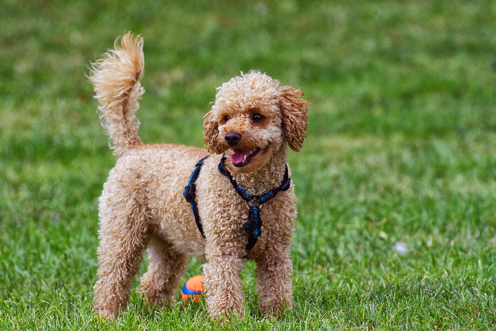

말티즈
귀여운 외모와 부드러운 성격(?)
긴 털로 잘 알려져 있는 소형견입니다.

푸들
푸들은 매우 지능적이고
활발한 성격을 가진 견종입니다.
비숑 프리제
비숑 프리제는 귀엽고 사랑스러운 외모와
친근한 성격으로 인기 있는 작은 견종입니다.
닥스훈트
독특한 외모와 용감한 성격으로
잘 알려진 강아지입니다.
긴 몸과 짧은 다리가 특징입니다.
포메라니안
작고 귀여운 외모와 활발한 성격으로
주로 화려한 털과 똑똑하고
호기심 많은 성격으로 유명합니다.

치와와
세계에서 가장 작은 강아지 중 하나로
작은 체구에도 불구하고
매우 용감하고 강한 성격을 가졌습니다.
골든 리트리버
친근하고 다정한 성격, 높은 지능,
뛰어난 훈련 능력덕분에
전 세계에서 매우 인기 있는 강아지입니다.

시츄
작은 체구와 귀여운 외모로 유명한 장모종으로,
원래 중국에서 귀족의 반려견으로 길렀습니다.

웰시코기
작고 강한 체격을 가진,
매우 사랑스러운 강아지입니다.

요크셔 테리어
작고 우아한 외모와
활발한 성격으로 유명한 소형 강아지입니다.